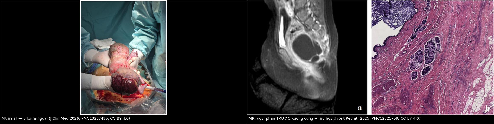
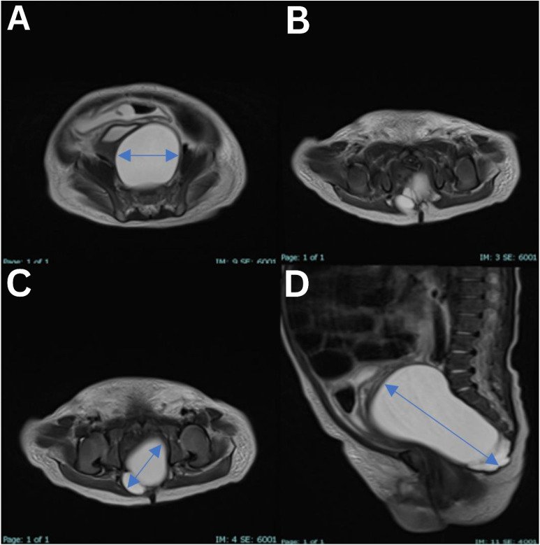
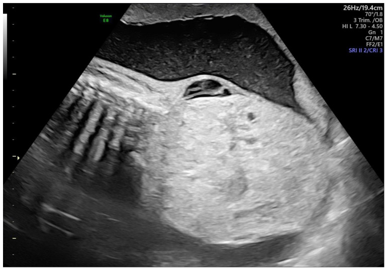
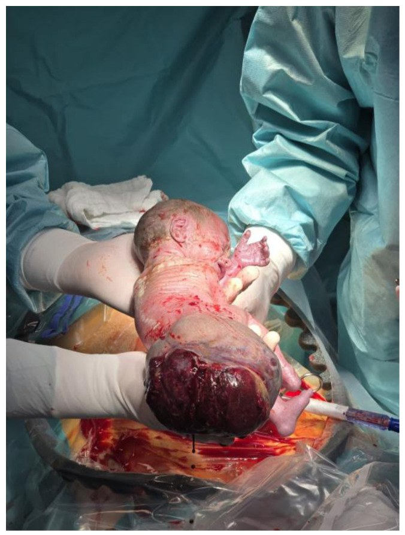
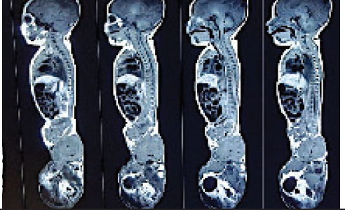

680 — U quái cùng cụt ở trẻ: Altman I–IV, mỡ + vôi hóa & nguy cơ ác tính theo tuổi / Sacrococcygeal teratoma
Tags: pattern:khoi-cung-cut pattern:khoi-dac-nang pattern:khoi-co-mo-voi-hoa vung:cung-cut vung:khung-chau-nhi protocol:US-MRI-thai-va-sau-sinh incidentaloma:khoi-cung-cut-so-sinh score:Altman
Mức chắc chắn (certainty): tổng hợp y văn (literature synthesis) — số liệu lấy trực tiếp từ các bài toàn văn mở (ghi PMCID từng chỗ); ảnh CC BY/CC BY-ND dùng nguyên bản, ảnh CC BY-NC-ND giữ nguyên không cắt ghép. Chưa gắn một ca nguyên văn duy nhất của nhóm.
1. Tổng quan bệnh học – cơ chế hình ảnh
- U quái cùng cụt (sacrococcygeal teratoma — SCT) là u tế bào mầm (germ cell tumor) ngoài sinh dục hay gặp nhất ở trẻ, phát sinh từ tế bào toàn năng vùng nút Hensen (Hensen node) ở đuôi phôi — vì thế u chứa cả ba lá phôi (ngoài – giữa – trong): da/niêm mạc, mỡ, sụn, xương/răng, mô thần kinh, ruột, tụy. Dịch tễ: 1/35.000–40.000 trẻ sinh sống (Park J et al., Front Pediatr 2025, PMC11973306); nam : nữ ≈ 1 : 3 (Wang Y et al., World J Clin Oncol 2026, PMC12836064).
- Mô học quyết định tiên lượng: trong một cohort quốc gia, 48% trưởng thành (mature), 34% non (immature), 18% ác tính (malignant); sơ sinh đại đa số là tổn thương lành — u ác thường lộ diện sau 2 tuổi hoặc lúc tái phát (Langiewicz J et al., J Clin Med 2026, PMC13257435).
- TẠI SAO hình ảnh là "khối hỗn hợp mỡ + vôi hóa + nang + mô đặc" (vật lý):
- Mỡ trưởng thành: −40 đến −120 HU trên CT → giảm đậm độ rõ; T1W tăng tín hiệu mạnh và TỤT (mất tín hiệu) trên chuỗi fat-sat — đây là bằng chứng "có mỡ", không phải máu hay mucin.
- Xương/răng/vôi hóa (lá phôi giữa): tăng đậm độ kiểu xương (khoảng +300 đến +1.000 HU), tối trên mọi chuỗi MRI.
- Nang dịch (biểu mô tiết nhầy, mô thần kinh): 0–20 HU, T2W rất sáng, không ngấm thuốc; phần đặc ngấm thuốc và có thể có shunt động–tĩnh mạch trong u.
- TẠI SAO khối to gây phù thai/đa ối: shunt mạch trong u làm tăng cung lượng tim thai → tim to, suy tim → hydrops, đa ối; u càng đặc, nhiều mạch, lớn nhanh thì nguy cơ càng cao. U > 10 cm, mạch máu nhiều/tăng nhanh: tử vong chu sinh ~50%, trong khi u chủ yếu nang thì gần như không tử vong (PMC11973306).
- Ngưỡng tiên lượng trước sinh: tỷ lệ thể tích u/thai (tumor-to-fetus ratio — TFR) > 0,12 trước 24 tuần gắn với tiên lượng xấu (PMC13257435).
- TẠI SAO vị trí lại quyết định biến chứng cơ năng: phần trước xương cùng chèn trực tràng, bàng quang, đám rối cùng → Altman III–IV có tỷ lệ rối loạn đại tiện, tiểu tiện và vận động chi dưới cao hơn hẳn thể lồi ra ngoài (PMC13257435). Đây là lý do phải đo và mô tả phần trong khung chậu, không chỉ nhìn khối lồi sau mông.
2. Mẫu hình + chẩn đoán phân biệt theo vị trí (gamut)
Phân loại Altman (Surgical Section, American Academy of Pediatrics) — theo vị trí, không theo mô học:
- Type I: chủ yếu lồi ra ngoài, thành phần trước xương cùng tối thiểu.
- Type II: khối ngoài + phần trong khung chậu đáng kể.
- Type III: chủ yếu trong khung chậu, phần ngoài nhỏ.
- Type IV: hoàn toàn trước xương cùng, KHÔNG có phần ngoài → dễ phát hiện muộn, dễ nhầm nang vô danh.
- Altman còn chia kích thước: nhỏ 2–5 cm, vừa 5–10 cm, lớn > 10 cm (PMC11973306).
Gamut khối vùng cùng cụt ở trẻ, xếp theo "thành phần chủ đạo":
- Nang + mô đặc lẫn mỡ/vôi hóa, có/không lồi ra ngoài: SCT (chốt).
- Chỉ có MỠ, liên tục với ống sống, khuyết cung sau: u mỡ – tủy màng não (lipomyelomeningocele) — bệnh cảnh dây chằng neo tủy (tethered cord).
- Nang trước xương cùng + khuyết xương cùng hình liềm (scimitar sacrum): màng não trước xương cùng (anterior sacral meningocele) — nối ống sống qua lỗ cùng.
- Bộ ba Currarino: khuyết xương cùng + khối trước xương cùng (u quái/màng não) + dị dạng hậu môn trực tràng, di truyền trội MNX1 (HLXB9).
- Nang trùng lặp trực tràng / nang ruột: nang thành có lớp cơ, dính trực tràng, không mỡ.
- Khối đặc xâm lấn: rhabdomyosarcoma, neuroblastoma vùng chậu, chordoma (người lớn, hủy xương cùng).
- Viêm: áp-xe quanh hậu môn/cùng cụt (sốt, đau, có mủ) — u quái bội nhiễm cũng có thể giả áp-xe.
Mnemonic "SACRAL": Sacrococcygeal teratoma · Anterior sacral meningocele · Currarino triad · Rectal duplication cyst · Atypical lipoma / lipomyelomeningocele · Lymphangioma & các khối mạch – mô mềm khác.
3. Bảng so sánh phân biệt (ma trận đối chiếu)
| Thực thể (entity) | Hình ảnh điển hình | Chốt vào (rule-in) | Chốt loại (rule-out) | Gợi ý xác nhận |
|---|---|---|---|---|
| U quái cùng cụt (SCT) | Khối hỗn hợp: mỡ (−40 đến −120 HU, T1 sáng, tắt fat-sat) + vôi hóa/răng + nang dịch + mô đặc ngấm thuốc; thường lệch phải, đẩy trực tràng ra trước | Có MỠ + nang + mô đặc trong cùng một khối vùng cùng cụt | Khối thuần nang, không mỡ, không vôi hóa, thành mỏng đều → nghĩ nang khác | MRI có fat-sat + AFP/βhCG; cắt u kèm xương cụt |
| U mỡ – tủy màng não | Mỡ liên tục với ống sống qua khuyết cung sau, tủy neo thấp (dưới L2–L3) | Mỡ nối ống sống + khuyết cung sau + tủy thấp | Không liên tục ống sống, có vôi hóa/răng → SCT | MRI toàn bộ cột sống T1/T2, không cản quang |
| Màng não trước xương cùng | Nang dịch đơn thuần trước xương cùng, khuyết xương cùng hình liềm, cuống qua lỗ cùng | Cuống nối ống sống + khuyết xương cùng | Có mỡ/vôi hóa trong khối → SCT; không cuống → nang khác | MRI T2 dọc cùng cụt; không chọc hút |
| Bộ ba Currarino | Khuyết xương cùng hình liềm + khối trước xương cùng + dị dạng hậu môn trực tràng | Đủ 3 thành phần | Chỉ có khối, xương cùng bình thường → không phải Currarino | X-quang/MRI xương cùng, đánh giá hậu môn trực tràng, gen MNX1 |
| Nang trùng lặp trực tràng | Nang thành dày có lớp cơ, áp sát/ dính thành trực tràng, dịch trong | Thành có cơ + dính trực tràng + không mỡ | Có mỡ, vôi hóa, mô thần kinh → SCT | MRI tiểu khung + nội soi/ siêu âm qua trực tràng |
| Chordoma xương cùng | Khối phá hủy xương cùng, calci hóa dạng "khói", người lớn/trẻ lớn | Hủy xương + khối mô mềm lớn | Xương cùng còn nguyên vỏ, có mỡ/răng → SCT | CT xương + MRI + sinh thiết |
| Rhabdomyosarcoma vùng chậu | Khối đặc, xâm lấn, không mỡ, không vôi hóa, ngấm thuốc mạnh | Khối đặc xâm lấn, không mỡ/vôi hóa, lớn nhanh | Có thành phần mỡ + vôi hóa → SCT | Sinh thiết, hóa mô miễn dịch |

Trái: sơ sinh với khối cùng cụt khổng lồ lồi ra ngoài — thể Altman I [Langiewicz J et al., J Clin Med 2026, PMC13257435, CC BY 4.0]. Phải: MRI T2 dọc (a) cho thấy thành phần nang trước xương cùng (Altman II–III) và (b) mô học u quái trưởng thành [Front Pediatr 2025, PMC12321759, CC BY 4.0]. Ảnh ghép letterbox, giữ nguyên tỷ lệ.Ba dấu hiệu "đọc đúng" trên MRI

MRI T2 (A–C axial, D sagittal) — nang 7,0 × 3,9 × 3,8 cm sau tử cung/bàng quang, trước xương cùng, thuần dịch, vách mỏng = u quái cùng cụt type IV hoàn toàn trước xương cùng, không khuyết xương cùng, không xâm lấn ống sống [Almaawali AK et al., Sultan Qaboos Univ Med J 2026, PMC13227553, CC BY-ND 4.0 — giữ nguyên bản, không cắt/ghép].- Thành phần mỡ: phải thấy tắt tín hiệu trên T1 fat-sat (hoặc −40 đến −120 HU trên CT) thì mới gọi là mỡ thật.
- Quan hệ với ống sống: luôn chụp T2 dọc toàn bộ cột sống — mỡ/u chui vào ống sống đổi hoàn toàn đường mổ.
- Phần trước xương cùng: đo 3 chiều và ghi thể tích, đừng chỉ mô tả "khối sau mông".
4. Protocol chụp + hệ phân độ/điểm chuẩn hóa
Trước sinh (khi phát hiện khối cùng cụt trên siêu âm thai):
- Siêu âm thai là tuyến đầu; đo 3 chiều → thể tích (dài × trước–sau × ngang × 0,523), tỷ lệ đặc/nang, TFR, Doppler mức tưới máu, đa ối, hydrops, siêu âm tim thai (tìm suy tim cung lượng cao).
- MRI thai khi cần đánh giá phần trong khung chậu/ống sống hoặc chuẩn bị can thiệp.
- Ngưỡng tiên lượng: TFR > 0,12 trước 24 tuần → nguy cơ xấu; khối > 10 cm, đặc, nhiều mạch → nguy cơ tử vong chu sinh cao (PMC13257435; PMC11973306).
- Can thiệp bào thai chỉ cho ca chọn lọc (hydrops, khối đặc tăng nhanh): sống sau mổ mở 60,9%, can thiệp ít xâm lấn khác 58,2%, nhóm đốt/nghiền/keo 44,6% (Cianci MC et al., Front Pediatr 2025, PMC12185440) — tư vấn phải nêu cả nguy cơ mẹ (vỡ ối non, tiền sản giật, HELLP).
Sau sinh:
- MRI tiểu khung + toàn bộ cột sống (T1W, T2W, T1 fat-sat, sau tiêm) — bắt buộc trước mổ; CT chỉ thêm khi cần đánh giá xương cùng.
- Xét nghiệm: AFP, βhCG, LDH. AFP phải đọc theo tuổi — sơ sinh đủ tháng trung bình 41.687 ng/mL ngày 0 (khoảng 95,5%: 9.120–190.546), chu kỳ bán rã 5,5 ngày lúc sinh, 11 ngày ở 14–30 ngày tuổi, 33 ngày tới 4 tháng; về mức người lớn (≤ 10–15 ng/mL) trong 8–12 tháng (Głowska-Ciemny J et al., Cancers 2023, PMC10486785).
- Phẫu thuật: cắt trọn u kèm cắt xương cụt (coccygectomy) — bỏ xương cụt là yếu tố nguy cơ tái phát độc lập (Wang Y et al., PMC12836064: 13/13 ca không cắt xương cụt đều tái phát).
- Hóa trị: u quái non/ác hoặc tái phát ác (thường là u túi noãn hoàng — yolk sac tumor, chiếm 22–56% ca tái phát ác).
Nguy cơ ác tính & tái phát — số của cohort toàn cầu 3.407 trẻ (van Heurn LJ et al., Int J Surg 2024, PMC11573091):
| Mốc | Nguy cơ ác tính tích lũy |
|---|---|
| 3 tháng tuổi | 3,3% |
| 6 tháng | 5,1% |
| 1 tuổi | 10,1% |
| 2 tuổi | 32,9% |
| Sau 6 tuổi | trần 64%, không tăng thêm |
- Tái phát 10,2% (349/3.407), trong đó 36,1% là tái phát ác; yếu tố nguy cơ: Altman II (OR 1,6), Altman III (OR 1,6), mô học non (OR 1,9), mô học ác (OR 4,0).
flowchart TD
A[Khoi vung cung cut o tre] --> B{Co phan loi ra ngoai?}
B -->|Co| C[Altman I-II: MRI tieu khung + cot song, AFP theo tuoi]
B -->|Khong| D[Altman IV: nghi nang truoc xuong cung - MRI truoc moi thu thuat]
C --> E{AFP tang khong phu hop tuoi hoac khoi dac nhieu mach?}
D --> E
E -->|Khong| F[Cat tron u + cat xuong cut trong vai tuan dau]
E -->|Co| G[Hoa tri truoc hoac sinh thiet theo duong sau - xem xet u ac]
F --> H[Theo doi AFP + MRI: 3-6-12 thang, sau do hang nam den het da day thi]
H --> I{Tai phat?}
I -->|Co| J[Danh gia lai mo hoc - 36 phan tram tai phat la ac]
I -->|Khong| K[Tiep tuc theo doi den khi truong thanh]
5. Biến thể bình thường và cạm bẫy
- Lúm cùng cụt (sacrococcygeal dimple) — biến thể bình thường: lúm giữa rãnh, < 5 mm**, cách hậu môn **> 2,5 cm, không kèm búi lông, u mỡ, nốt sắc tố, chảy dịch hay bất thường thần kinh → không cần MRI. Ngược lại: lúm ≥ 5 mm, < 2,5 cm từ hậu môn, hoặc có dấu da kèm theo → MRI cột sống cùng cụt để loại u mỡ/tủy neo.
- Cạm bẫy 1 — chọc hút/dẫn lưu nang: nang trước xương cùng có thể là màng não hoặc u quái; chọc hút gây viêm màng não, nhiễm trùng, rò dịch não tủy. Không chọc khi chưa có MRI.
- Cạm bẫy 2 — "chỉ cắt phần lồi ra ngoài": bỏ sót phần trước xương cùng (Altman II–IV) là nguồn tái phát kinh điển; phải cắt kèm xương cụt.
- Cạm bẫy 3 — AFP sơ sinh: dùng ngưỡng người lớn (10–15 ng/mL) sẽ gọi oan mọi sơ sinh là "AFP tăng"; phải so bảng theo tuổi (mục 4) và theo dõi động học (AFP giảm chậm hơn nửa đời → nghi còn u).
- Cạm bẫy 4 — u quái bội nhiễm giả áp-xe: khối đau, sốt, có mủ vẫn có thể là SCT hoại tử/nhiễm; siêu âm/MRI trước khi rạch.
- Cạm bẫy mặt cắt: trên CT/MRI ngang, u quái type IV nằm sau trực tràng, trước xương cùng — khác nang tuyến tiền liệt/utricle (bé trai, nằm trước trực tràng, dính sàn niệu đạo) và nang buồng trứng (bé gái, xuất phát từ phần phụ, thường lệch sang bên, có "daughter cyst"). Vị trí tương quan với trực tràng là mốc phân biệt đầu tiên.
6. Tự lượng giá — Blind Quiz (ảnh trơn ngoài, đáp án ẩn trong khối chi tiết)
Ca 1 — Thai 3 tháng cuối, siêu âm thấy khối sau cùng cụt. Nhìn ảnh trước, mô tả trước.

- Gợi ý lâm sàng: khối 11 × 11 cm, thể tích ước tính 657,3 mL, TFR 0,48, không đa ối, không hydrops.
- Câu hỏi: Thành phần khối đặc hay nang? TFR 0,48 nói gì về tiên lượng? Ba chẩn đoán phân biệt và bước tiếp theo?
Bấm để hiện đáp án (findings + chẩn đoán)
- Dấu hiệu: khối hỗn hợp đặc–nang lớn vùng cùng cụt, phần đặc chiếm ưu thế; không thấy hydrops/đa ối trong ca này.
- Chẩn đoán: u quái cùng cụt (SCT). TFR 0,48 > 0,12 → nằm trong nhóm tiên lượng xấu theo ngưỡng trước 24 tuần; cần siêu âm tim thai, theo dõi tăng trưởng u và tư vấn sinh tại trung tâm sản–nhi.
- Vì sao: phần đặc, nhiều mạch tạo shunt → suy tim cung lượng cao → hydrops; đây là cơ chế tử vong chu sinh chính, không phải chèn ép đơn thuần.
- Nguồn ảnh: Langiewicz J et al., J Clin Med 2026, PMC13257435 Fig 1, CC BY 4.0.
Ca 2 — Bé gái 2 tuần tuổi, khối vùng cùng cụt nhưng KHÔNG thấy gì lồi ra ngoài khi khám. Nhìn MRI.
- Câu hỏi: Khối nằm ở đâu so với trực tràng và xương cùng? Altman type mấy? Có được chọc hút để "xác định bản chất" không?
Bấm để hiện đáp án (findings + chẩn đoán)
- Dấu hiệu: nang đơn thùy, thuần dịch, vách mỏng, 7,0 × 3,9 × 3,8 cm, nằm sau tử cung/bàng quang, trước xương cùng; không khuyết xương cùng, không xâm lấn ống sống.
- Chẩn đoán: u quái cùng cụt Altman type IV (hoàn toàn trước xương cùng) — mô học sau mổ là u quái trưởng thành (đủ 3 lá phôi, không thành phần non/ác).
- Không chọc hút: khối trước xương cùng có thể là màng não trước xương cùng; chọc gây rò dịch não tủy/viêm màng não. Đường chẩn đoán là MRI, xác nhận là mô học sau cắt trọn kèm xương cụt.
- Nguồn ảnh: Almaawali AK et al., Sultan Qaboos Univ Med J 2026, PMC13227553 Fig 1, CC BY-ND 4.0 (nguyên bản).
Ca 3 — Sơ sinh có khối lớn lồi sau mông. Hai ảnh: lâm sàng và CT toàn thân.


- Câu hỏi: Mô tả phân bố ngoài cơ thể vs trước xương cùng (kích thước 16,5 × 10,2 × 6,0 cm)? Vì sao vẫn phải chụp MRI cột sống? Điều gì quyết định tái phát?
Bấm để hiện đáp án (findings + chẩn đoán)
- Dấu hiệu: khối đa thùy, hỗn hợp đặc–nang, phần ngoài cơ thể chiếm ưu thế + phần trước xương cùng nhỏ → Altman type I–II.
- Vì sao vẫn cần MRI cột sống: loại u mỡ – tủy màng não (mỡ chui vào ống sống, tủy neo thấp) — nếu bỏ sót sẽ mổ sai đường và để lại bệnh lý tủy.
- Quyết định tái phát: cắt trọn + cắt xương cụt; bỏ xương cụt là yếu tố nguy cơ tái phát độc lập, và 36,1% ca tái phát là ác tính (PMC11573091).
- Nguồn ảnh: Langiewicz J et al., J Clin Med 2026, PMC13257435 Fig 2, CC BY 4.0; Shrestha R et al., JNMA 2025, PMC12750976 Fig 1, CC BY 4.0.
Bài liên quan chéo
- 600 – Tổng quan Nhi khoa
- 674 – U quái & u tế bào mầm vùng gan ở trẻ (cùng họ tế bào mầm, khác vị trí)
- 1701 – Đường mổ u quái cùng cụt: sau–qua xương cùng vs nội soi hỗ trợ, Altman I–IV (chọn đường mổ, cắt xương cụt, theo dõi tái phát)
- 656 – Bất thường tủy sống ở trẻ (u mỡ – tủy màng não, tủy neo)
- 630 – U bụng nhi: neuroblastoma vs Wilms
- 635 – Dị tật tiết niệu nhi: SFU, VUR, PUV (chèn ép đường tiểu dưới)
- 645 – Vỡ khung chậu ở trẻ (đau vùng cùng cụt sau chấn thương)
- 1705 – Theo dõi tiết niệu – đại tiện dài hạn sau cắt u quái cùng cụt (LUTD 19,6%, bàng quang thần kinh, tủy bám thấp, bón/ACE)
Ảnh
680_u-quai-cung-cut_US-thai_PMC13257435-Fig1-CCBY.jpg— siêu âm thai, CC BY 4.0.680_u-quai-cung-cut_Anh_PMC13257435-Fig2-so-sinh-CCBY.jpg— ảnh lâm sàng sơ sinh, CC BY 4.0.680_u-quai-cung-cut_MRI-PMCT_PMC12321759-Fig2-truoc-xuong-cung-CCBY.jpg— MRI dọc + mô học, CC BY 4.0.680_u-quai-cung-cut_MRI_PMC13227553-Fig1-nang-type-IV-CCBYND.jpg— MRI type IV, CC BY-ND 4.0 (nguyên bản, không cắt/ghép).680_u-quai-cung-cut_CT_PMC12750976-Fig1-coronal-CCBY.jpg— CT coronal, CC BY 4.0.composite_ngoai-vs-truoc-xuong-cung.jpg— ảnh ghép letterbox từ hai ảnh CC BY 4.0 ở trên.- Nguồn + giấy phép từng ảnh:
images/CREDITS.md; link bài gốc:sources.md.
Không dùng để chẩn đoán độc lập khi chưa có người hướng dẫn.